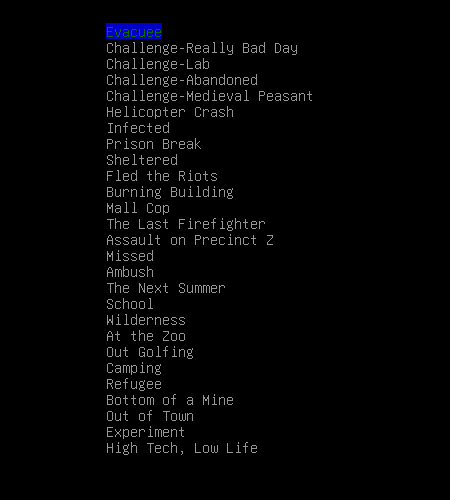

Making A Character
When choosing how to build your character, you have multiple options to pick from. You can build from a previously used character, use a random one, or create your own. Here, we go over how to make your own, new character.
Scenarios
The first option when creating a character is choosing a Scenario for your character to start in. A Scenario dictates everything form where your character will start to what kind of person your character was before the apocalypse. There is a list of nineteen Scenarios, each with their own specific ways of playing. Do you want to escape from a prison your character managed to get themself into before the apocalypse? Was your character a highscooler, having to fight their way through hordes of zombies they use to know to escape the school? Or would you rather be a (un?)willing experiment put on by scientists? It's up to you to choose.
Professions
Who was your character before they got thrown into this zombie-filled nightmare? Were they a scientist at a local lab? Were they a school teacher? How about a priest, or a convict recently let out of jail? This is just the start of the choices you can choose from when picking your profession. Professions give you your starting equipment, any skills you may get, and a short summary of what your life may have been like before the apocalypse.
Traits
Next on the list is traits. You may choose both positive and negative traits for your character, and botha affect your in-game play a lot. Does your body not digest meat well? Do animals usually feel a bond with you? Do you need glasses to see properly? All of these things and more could mean life or death in a survival situation, as the game thouroughly enjoys to prove time and time again. Pick wisely, for these can make or break your character.
Stats
The game makes use of four stats to base your character's basic aspects off of. Health, how resistant you are to disease, how well you can swing a weapon or shoot one, even how well you can see things like traps. Strength, Dexterity, Intelligence, and Perception. Other than the things these seem to do based just off what they're called, they might do more than you expect.
Strength affects your damage with melee weapons, how much weight you can carry, and how much health you have. It also has a minor affect on how resistant you are to disease and infection.
Dexterity affects how easy it is to hit things with melee weapons, with throwing weapons, and helps to make it easy to aim ranged weapons. It also affects things requiring finesse, including dodging.
Intelligence affects the time it takes you to read books, how fast your skills go away if you don't use them, how fast you can craft items, and how easy it is to install bionics.
Perception affects how well you can aim ranged weapons, how easy it will be to detect things like traps, and it can also affect how good you are at driving vehicles.
As you can see, putting the right points into stats can be very effective in making a well-rounded character. As you usually cannot change these later on(expect through some bionics, mutations, or certain mods to the game), it is often a good idea to invest in them while you can, as they will affect your character for the entire playthrough.
Skills
Skills are important to how you play the game as well. However, unlike most of the other options while choosing a character, skills can be easily and actively raised in game through hard work, as with real life. The twenty-eight skills in CDDA affect how well you can perform in situations requiring them. Fixing a car? You had better have good skills with mechanics, and maybe even in electronics. Building a house? You need high skills in fabrication, along with some tailoring skills. Shooting a ranged weapon? Better to have skills in that specific weapon, otherwise you might as well be using a slingshot.